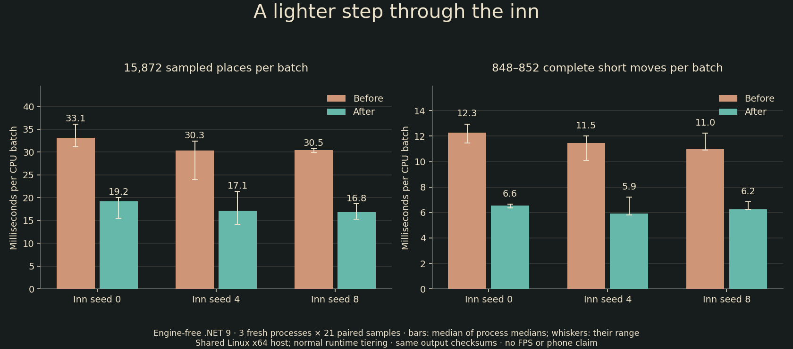

A lighter step through the inn
25 October 2026 · Day 34
A busy inn should spend its time on the people inside it. This update makes its existing collision checks cheaper, keeping the same doors, stairs and places a person can stand.
Hundreds of little walls
Sprawl's inn is built from connected wings, galleries and roof rooms. Its walls follow those shapes in many short pieces. The three versions measured for this update contain between 836 and 867 wall spans.
Walking checks those walls repeatedly. A longer movement is broken into small steps so a person cannot slip through a thin wall between frames. Townsfolk also need to learn which places are clear before planning their journeys. Those careful checks are useful, but calculating the distance to every wall piece costs time.
A question that is cheaper to answer
Most inn walls run straight across or straight up the plan. Before calculating the distance to one of those spans, the inn can ask whether its entire wall line is already too far away to touch.
If it is, the more expensive calculation can be skipped. Everything nearby still goes through the established collision test. Diagonal walls keep that test too. Doorway gaps, rounded wall ends, furniture and the two flights of stairs retain their existing rules.
There is no stored copy of the walls to go stale. The check reads the current geometry every time, so a changed wall is seen on the next query.
Same footsteps, less work
The comparison runs the previous and updated movement code over the same inn geometry. It checks exact positions after movement, stair landings, narrow clearance, wall ends and changes to the walls while the inn stays open. Further checks probe the tiny numerical differences on either side of a collision boundary.
The measurements cover complete short movements and a grid of places a town route planner might sample. They measure the collision code outside the game engine. They do not establish an overall frame-rate improvement or a result on a phone.
Across three fresh benchmark processes, complete short movements used roughly 40–49% less CPU time in these samples. Sampling places a route planner might use took roughly 34–50% less. Both implementations produced the same checksums and allocated no managed memory inside the measured queries. The host was shared with other work, so the raw samples and their variation are retained.

This is a small change in the work each footstep asks the computer to do. The benefit comes from how often the inn asks the same kind of question.